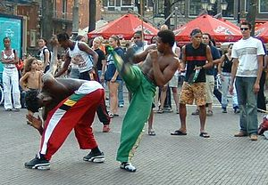
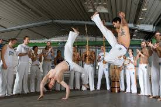
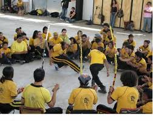
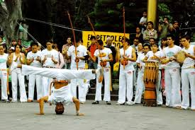
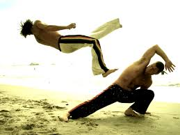
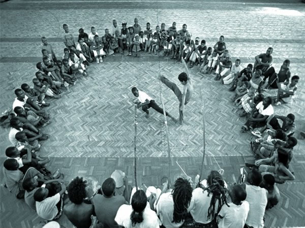
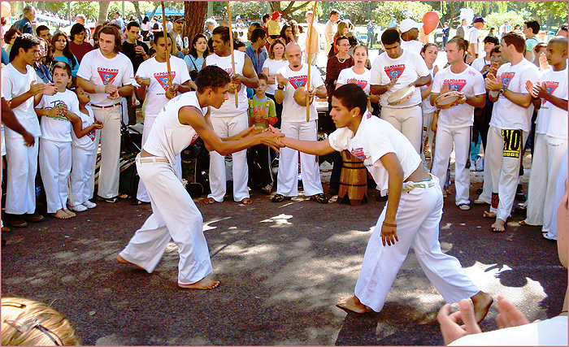
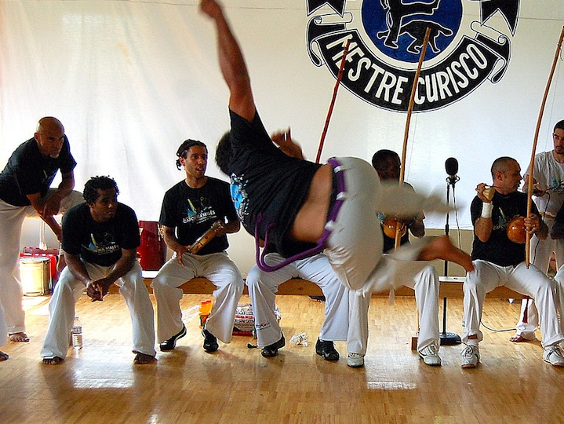
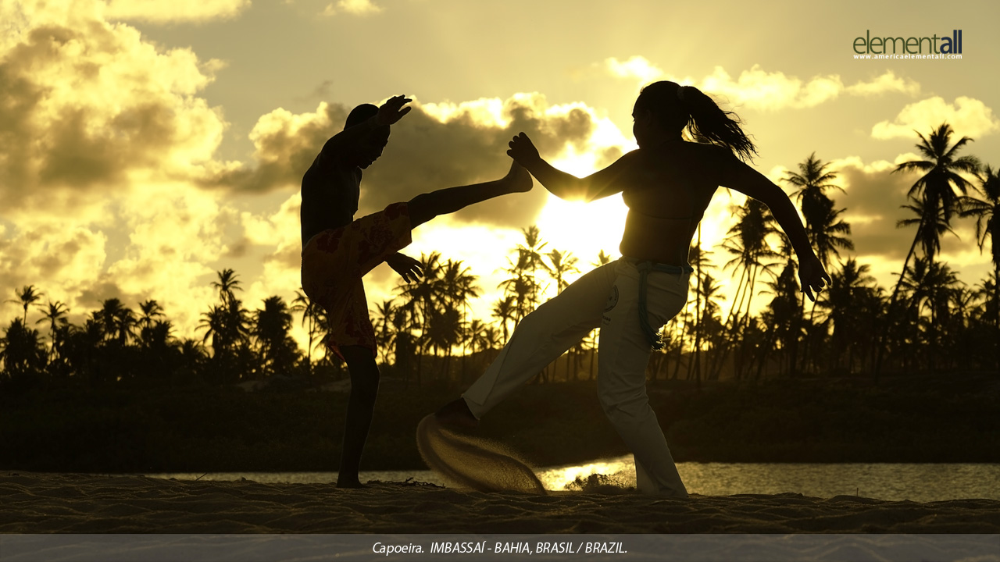

Capoeira
Capoeira es un arte marcial brasileño de origen africano que combina facetas de baile, música y acrobacias, así como expresión corporal. Fue desarrollado en Brasil por descendientes africanos con influencias indígenas, probablemente a principios en el siglo XVI. Es conocido por sus rápidos y explosivos movimientos, que utilizan los brazos y las piernas para ejecutar maniobras de gran agilidad en forma de patadas, giros y derribos, entre otros. La capoeira en situaciones reales incorpora movimientos bajos y barridos, mientras que en el ámbito deportivo se hace más énfasis en los movimientos altos y en las demostraciones de habilidad. Suele ser practicado con música tradicional de berimbau.
E mail
Facebook
Existen varias teorías en relación al origen de la palabra capoeira. Una de ellas viene establecida por la lengua tupí-guaraní donde, kapuêra (ka´ávy = campo, matorral; puêra = que ya fue) resulta en la secuencia de las palabras capuíra, capoêra y capoeira. Según algunos estudiosos, la palabra capoeira designaría un tipo especial de jaulas, usadas en el transporte de aves (capón), que eran conducidas por esclavos a los mercados. El término se extendería de las jaulas a los esclavos, traidos de Angola, en África. Según los defensores de esa hipótesis, mientras aguardaban la llegada de los comerciantes, los esclavos se divertían en la práctica de su arte-lucha, pasando también a denominarse igualmente bajo ese término (capoeira). Llegó a extenderse también al claro de un bosque donde se practicaba este deporte y luego a una población cercana.

Desde siempre, la capoeira se practica en rodas, que son por así decirlo "luchas amistosas sin contacto", aunque no siempre ha de ser así. Los practicantes forman un círculo cerrado formado por capoeiristas y músicos, que llevan el ritmo e intensidad del "juego" ("jogo")donde se muestra la maña ("mandinga"). En la roda hay 2 capoeristas en un momento determinado: dos capoeiristas jugando y el resto en espera de sustituir a uno de estos dos anteriores. Durante la roda, los capoeiristas que observan el juego se limitan a cantar y tocar las palmas para dar mayor energía a la misma. Cabe señalar que siempre al entrar al jogo uno debe estar colocado a los pies del berimbao.



Existen historiadores que afirman que en la Capoeira, se encuentran movimientos que reflejan a algunos animales de la jungla. Como el jaguar, por su manera cautelosa y a la vez explosiva de atacar; la araña, por su manera de entrelazar su presa, por todos lados; el macaco, con sus saltos y cabriolas y la zorra, por sus astutas técnicas de engañar al enemigo. En todo caso, el esclavo que escapaba a la jungla, estaba encadenado y tenía que defenderse de los «Capitães do mato» (cazadores de esclavos) como pudiera. Aplicaba golpes con la cabeza, los codos, las rodillas, girando, saltando o rodando por el suelo.
La capoeira como disciplina marcial destaca sobre todo por la suavidad y amplitud de sus movimientos, que en su mayoría describen trayectorias circulares, golpes repentinos, atrapes con los pies, el uso de amagues y fintas, las distancias largas y medias, los golpes con mano abierta, la esquiva corporal conjunta, y el uso de armas tradicionales.
La Capoeira como arte no se centra en herir al oponente. Más bien, enfatiza la destreza. Los capoeiristas a menudo prefieren mostrar el movimiento sin completarlo, imponiendo su superioridad en la roda. Si el oponente no puede esquivar un movimiento lento, no hay razón para usar uno más rápido. Cada ataque que entra, da a los participantes la oportunidad de practicar una técnica de evasión.

.jpg)
.jpg)
Capoeira tiene dos estilos principales, diferentes que se clasifican en: Capoeira Angola y Capoeira Regional. Capoeira Angola se refiere a la forma tradicional del 'jogo'. Es la forma más antigua, aproximadamente unos 500 años, con raíces en las tradiciones Africanas y es la vertiente de la que se cree que parten y derivan las demás formas de capoeira.
Capoeira Angola
Capoeira Angola se considera la madre de la capoeira y se caracteriza por mantenerse ligada a las tradiciones marciales, por los movimientos furtivos y por los participantes jugando al 'jogo' más cerca el uno del otro que en la regional o contemporánea. La música comienza lenta, y va aumentando el ritmo poco a poco según avanza la roda, y el 'jogo' bajo, en el suelo, con mucha malicia y picardía, con pocas acrobacias.
La Capoeira Angola se preocupa de mantener las tradiciones, y por tanto del origen o descendencia de cada grupo. En su árbol genealógico se muestra cómo todo Mestre es a su vez descendiente de otro Mestre, desde el origen con M. Pastinha hasta la actualidad.

Uma Luta Regional de Bahia (Conocida actualmente como Capoeira Regional)
Regional es una forma nueva de Capoeira. La inventó el Mestre Bimba, mezclando capoeira angola con otra lucha conocida como Batuque. La hizo más accesible al público y la desligó de los elementos criminales de Brasil.
El uniforme de la capoeira regional es blanco con una "corda" (cordón en español) de distinto color de acuerdo al grado de preparación del capoeirista (tomando el modelo de grados de las artes marciales japonesas o gendai budo) y de acuerdo al grupo de capoeira a que el mismo pertenezca. Antiguamente se utilizaban pañuelos de colores que los capoeiristas llevaban al cuello para cumplir la misma función, pero con la modernización de la capoeira, pasaron a utilizarse las ya mencionadas cordas. La corda se lleva a la altura de la cintura, se hace un nudo en el lado izquierdo del pantalón y el resto cuelga del mismo lado.

Capoeira Contemporánea
Contemporánea es un término empleado para grupos que practican múltiples estilos de capoeira simultáneamente. Los practicantes de Capoeira Contemporânea mezclan elementos de la Regional y Angola así como nuevos movimientos que no pueden clasificarse dentro de ninguno de estos estilos.
Es una práctia controvertida debido a que muchos jugadores defienden que Angola debe practicarse sola al igual que la Regional, para que el estudiante llegue a entender el 'jogo' en su totalidad. Otros jugadores defienden que un capoeirista debería tener un conocimiento de la capoeira moderna y tradicional y animarse a practicar ambas formas simultáneamente. Es una cuestión muy discutida ente los capoeiristas.

La capoeira es una compleja expresión del arte popular brasileño que combina danza, música, lucha y diversas formas de expresión corporal. A pesar de que se ha difundo rápidamente por todo el mundo, la capoeira en México aún es poco conocida.
En la actualidad, sin embargo, es posible encontrar grupos de capoeira en casi todas las grandes ciudades de nuestro país. La complejidad de la capoeira permite que cada grupo desarrolle una perspectiva distinta, un enfoque particular de la misma arte, haciendo de su trabajo algo único e incomparable con el de los demás. Semejante diversidad es parte de lo que contribuye al crecimiento y el valor de la capoeira en México, permitiéndole ser conocida y reconocida en ámbitos sociales cada vez más contrastantes.
Por lo que respecta a la Ciudad de México, la capoeira llegó en 1992, entre las maletas del maestro argentino Mariano Andrade, quien se dio a la tarea de impartir el primer taller de esta arte en el Distrito Federal, organizado por el Departamento de Danza de la UNAM. Ese mismo año participó con algunos de sus alumnos en el First National Capoeira Encounter en San Francisco, California. Desde entonces, la capoeira ha ido ganando espacios en la búsqueda por ser reconocida como una expresión artística con un lugar propio en el panorama cultural de nuestro país.
En 1994, con la colaboración de Mestre Delei, se realizó el primer Batizado de capoeira en México. Un año después, Mariano Andrade formó Ollin-Bao, un grupo dedicado a la difusión de las culturas afroamericanas que incluía en su repertorio exhibiciones de capoeira. Tras la disolución de Ollin-Bao en 1996, fundó Banda do Saci, grupo que desde 1998 practica exclusivamente Capoeira-Angola.
En 1998, personas interesadas en continuar practicando una capoeira ‘sin etiquetas’, se separan de Banda do Saci para iniciar Longe do Mar. El proyecto es pensado como un espacio dedicado al aprendizaje y la difusión de la capoeira desde una visión artística y un enfoque integral, con un método seguro y no competitivo. Desde sus orígenes Longe do Mar es un grupo de capoeira orgullosamente mexicano, cuyo trabajo ha llegado a ser reconocido por distintos maestros a nivel nacional e internacional.
Hoy en día, existe un gran número de grupos de capoeira en la Ciudad de México, nacidos, al igual que el nuestro, de la búsqueda de formas distintas de vivir y expresar lo que es la capoeira. Cada uno ha desarrollado diferentes métodos y enfoques para la enseñanza y la difusión de esta arte. Como hemos dicho, el trabajo realizado por cada uno de ellos es único e incomparable y, no obstante, todos comparten la misma esencia: el arte vivo, complejo y apasionante de la capoeira.
